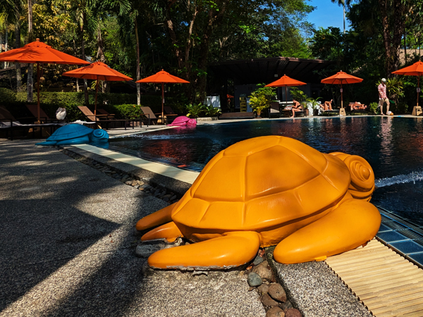
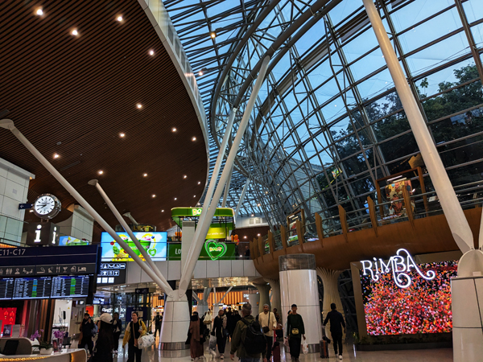

Tuesday 24th February We were in breakfast by 9:00 and had a few hours by the pool before checking out at midday. We had booked a taxi to the airport for 1:30 so had another hour at the pool while we waited. We were booked on the 15:40 Air Asia flight to Kuala Lumpa and had already been notified that we were delayed until 16:20 before we left the hotel.

We were at the airport with plenty of time and had lunch from 7-Eleven before going through immigration. It started getting less and less likely that our flight was going to depart at 16:20 and at about that time it moved again to 17:10. We had a change of gates at about 17:00 and eventually took off at about 17:45.
This all meant that we did not get into KLIA2 until gone 8pm. Immigration was very quick and we got our luggage after a wait of 10 - 15 minutes. We got the train to Terminal 1 and were hoping to check in our luggage for tomorrow morning. However, the queues at MAS check-in desks were horrendous and we were told to come back at midnight. We gave up on that idea and kept our bags with us.
We were heading for the Sama Sama Hotel but came out of the lift right next to the food court so decided we may as well go and eat there before checking in. We had very good curries in the same place we had eaten last year before walking to the hotel. We checked in, had showers and had an early night.
Wednesday 25th February We were up by 5:45, had quick showers and checked out of the hotel. We walked back to the airport and went up to the MAS check-in desks. Here there was total chaos with a lot more peope in the queues than there were last night. The area around the desks could not cope with the number of people so we were directed to an overflow area where people were waiting just to join the main queue.
It looked as if we were in for a long wait but eventually found that there were self check-in terminals where we could drop our luggage as we had already checked-in on-line. I have no idea why we were not told to go there first or if we could have used them last night. I also have no idea how many other people in the queue would have been able to use them had they known about them. Anyway, once we directed to the right place, we had our bags checked in within about 10 minutes.
This was all done by about 6:30 so we had time to go back down to the bus station for roti canai for breakfast. After eating, we returned to the terminal and went through immigration. Here we managed to by-pass the queues by going through the automatic gates. This was the first time we had been able to use these in Malaysia and they were a lot quicker... although we missed out on getting an exit stamp in our passports.

We were able to get the train out to the satellite terminal - it has not been running for the previous two years. This also saved us time so we were at the gate about two hours before the scheduled departure time of 09:15. Boarding was fairly smooth but once on the plane we were told that there was likely to be a delay as there was only one runway open (probably the cause of yesterdays delay). We eventually took off just after 10:15.
The flight was fairly uneventful. The cabin crew did not seem quite so keen on giving us as much wine as they have on some flights and we were not that bothered about drinking too much. The flight was just short of 14 hours. We did have a few glasses of wine at about the half way stage and a couple more with the second meal but we did not have as much as on some flights. We landed back at Terminal 4 at 16:10, 50 minutes late.
We had booked a taxi through the same company that we had used to get to Heathrow six weeks ago. The driver contacted us while we were waiting for our luggage. I phoned him when we had both bags and he turned up outside about 10 minutes later. By 17:15 we were on our way back to Kingsclere. The traffic was not as bad as it can be at this time and we were home just after 6.